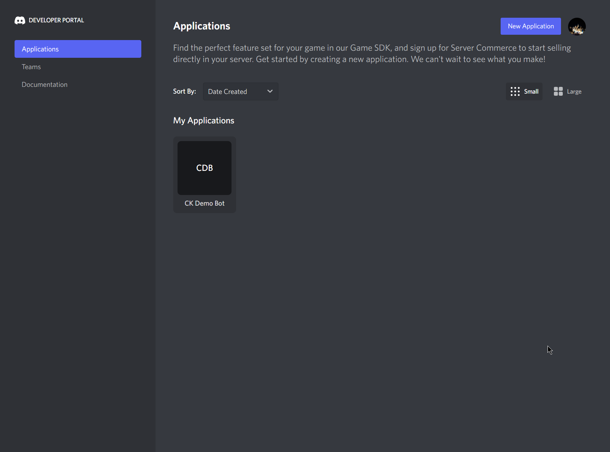
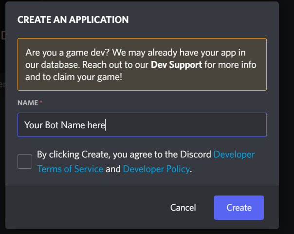
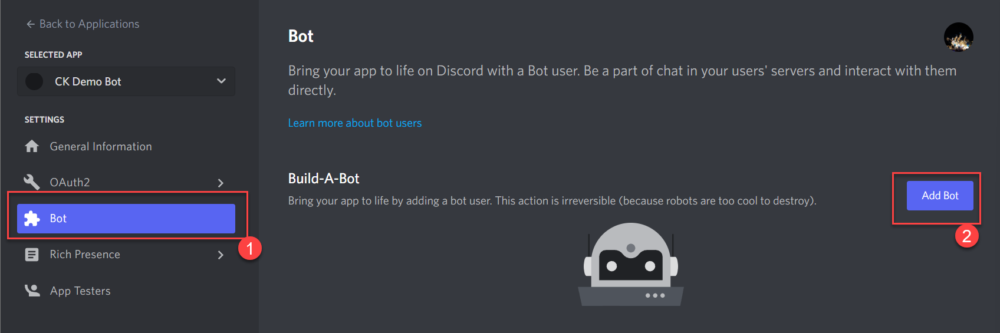
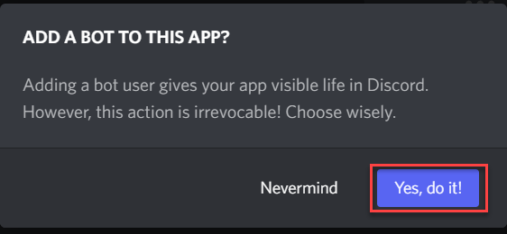
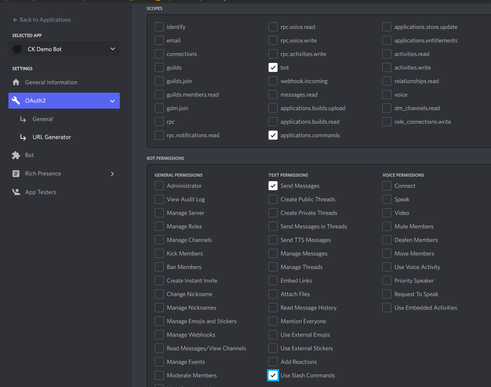
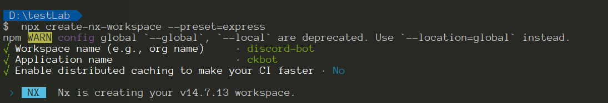
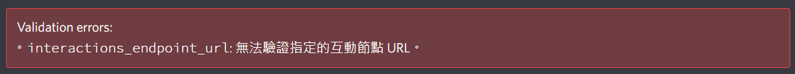
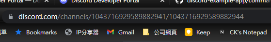
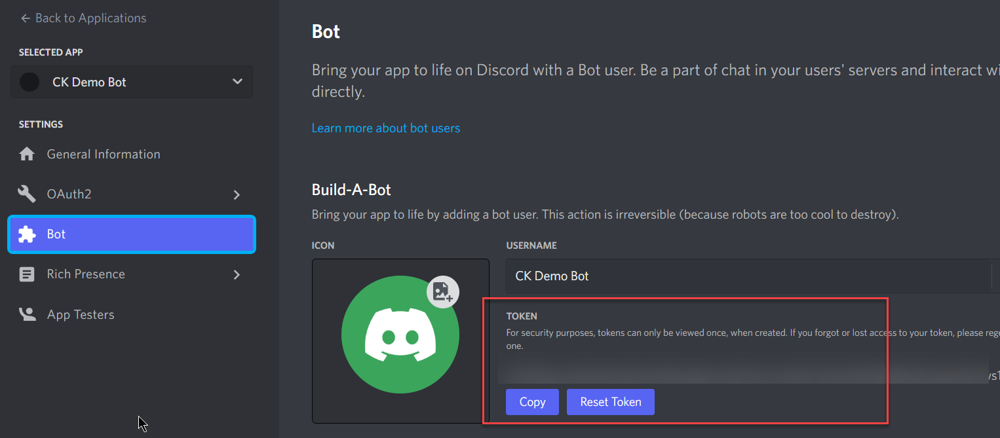
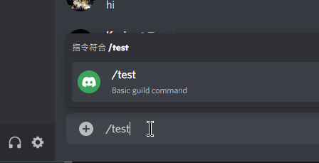

最近接了關於 Bot 開發相關的業務，趁休息時間玩一下 Discord Bot 的開發體驗，將過程記錄一下，搞不好後面還用的到。
在這之前還是快速介紹一下 Discord。Discord是一款專為社群設計的免費網路即時通話軟體與數位發行平台，在早期很常被遊戲玩家拿來做線上連線時的通訊軟體，現在是很多產品、社群等都會利用 Discord 來經營社群。
既然是平台，本身又提供 Bot 開發的能力，就要好好的探索一下到底 Bot 在 Discord 能做到什麼事情
建立第一個 Bot
在建立第一個 Bot 之前，假設你是純新手沒有開過 Discord 帳號，可以透過這篇說明建立自己的 Discord 帳號。
Create Application
進入 Developer Portal 並登入應可看到這個畫面

點選右上角的 New Application 會跳出建立 Application 的詢問視窗，輸入你想的名字，打勾 agree Terms of services 後，按下 Create 即完成第一個 Application 的建立

建立完成後在 Applications 的列表上就可看到剛剛建立的 application，點進去會看到等等開發時所需要的資訊，類似 Application ID 和 Endpoint URL 。
Config Bot
因為我們要建立 Bot，所以還要多做一個步驟


完成這步驟後，會看到一些可以設定的項目，其中 Token 會是待會開發時需要的資訊，晚點再回來這邊建立新 Token
Bot 需要取得使用權限及授權範圍，Discord 也很好心的給了建立方式，一樣在 Application 的畫面裡，左邊選單的OAuth2 下的 URL Generator，這頁面上，我們需要設定幾樣東西
- SCOPES:
bot、applications.commands - BOT PERMISSIONS:
Send Messages和Use Slash Commands

此畫面的最後面會有一個 GENERATED URL ，複製並貼到瀏覽器上，會開啟一個設定畫面，詢問這一個 Bot 想要加到哪一個伺服器中，就跟著步驟一步一步完成即可
開發 Bot
雖然官方有提供一個範例程式碼，但我還是想從頭做一次，過程中還是會參考 example code
-
建立一個 node express 專案，我這邊使用 NX 來幫忙建立 workspace
1
npx create-nx-workspace --preset=express

-
現在我們有一個可以用的 express app 可以運作，但為了讓 Discord Server 可以將訊息打到我們的 App，需要透過
ngrok的協助- 啟動 express app on port 3333
- 啟動 ngrok 並監聽 port 3333，正確啟動後會取得一個對外網址，這個網址我們要回填到 Discord Application 的
INTERACTIONS ENDPOINT URL中，當這樣設定完成後，Discord Server 就會將相關的訊息以 webhook 的方式打給我們 - 但這裡會發現無法正確儲存，原因是我們還沒有實做對應的 Endpoint 給 discord server 做驗證，下面會完成第一階段的功能
-
假設填入的網址是
https://xxxxxx.ngrok.io/interactions，express 這邊需要實做一個對應的POST方法1
2
3app.post('/interactions', (req, res) => {
console.log(req);
});在上一步驟時進行設定儲存時，會出現這個錯誤訊息

要排除這個錯誤，需要實做一個
PING-PONG的回應，實做程式碼如下1
2
3
4
5
6
7
8
9
10
11import { InteractionResponseType, InteractionType } from 'discord-interactions';
...
app.post('/interactions', (req, res) => {
const { type, id, data } = req.body;
/**
* Handle verification requests
*/
if (type === InteractionType.PING) {
return res.send({ type: InteractionResponseType.PONG });
}
});- 有多安裝一個套件
discord-interactions
- 有多安裝一個套件
-
這時候回去 discord application 頁面按儲存時還是會失敗，而且 express 這邊也會噴
req.body是 undefined 的錯誤，還少一個驗證 request 的功能1
app.use(express.json({ verify: VerifyDiscordRequest(process.env.PUBLIC_KEY) }));
PUBLIC_KEY可以從 Discord Application Detail 頁面中取得，放置.env檔案內即可
1
2
3
4
5
6
7
8
9
10
11
12
13
14
15import { verifyKey } from 'discord-interactions';
export function VerifyDiscordRequest(clientKey) {
return function (req, res, buf, encoding) {
const signature = req.get('X-Signature-Ed25519');
const timestamp = req.get('X-Signature-Timestamp');
const isValidRequest = verifyKey(buf, signature, timestamp, clientKey);
if (!isValidRequest) {
res.status(401).send('Bad request signature');
throw new Error('Bad request signature');
}
};
}這段功能補上去後，Discord Application 設定頁面應可正確的儲存了
註冊 Command
上面已經完成最基本與 discord 互動的 Endpoint，接下來就是要是處理 Command 的部分，我們期望是 User 在 Discord 頻道中使用 Bot 來下指令，用一個 test 作為指令行為驗證。使用前要先註冊，這邊有點繁瑣，拆步驟說明
-
取得 APP_ID: 資訊可以從 Discord Application Detail 頁面上取得
-
GUILD_ID: 這部分稍微麻煩點
-
首先開啟 Discord 網頁版並切到有 Bot 的 Channel
-
網址大概會長這樣

Channels 後面的第一組數字就是我們要的 GUILD_ID 了
-
-
詢問 Channel 是否有註冊過 Commands，如果沒有就註冊
1
2
3
4
5
6
7
8
9
10
11
12
13
14
15
16
17
18
19
20
21
22
23
24
25
26
27
28
29
30
31
32
33
34
35
36
37
38
39
40
41
export async function HasGuildCommands(appId, guildId, commands) {
if (guildId === '' || appId === '') return;
commands.forEach((c) => HasGuildCommand(appId, guildId, c));
}
async function HasGuildCommand(appId, guildId, command) {
// API endpoint to get and post guild commands
const endpoint = `applications/${appId}/guilds/${guildId}/commands`;
try {
const res = await DiscordRequest(endpoint, { method: 'GET' });
const data = await res.json();
if (data) {
const installedNames = data.map((c) => c['name']);
// This is just matching on the name, so it's not good for updates
if (!installedNames.includes(command['name'])) {
console.log(`Installing "${command['name']}"`);
InstallGuildCommand(appId, guildId, command);
} else {
console.log(`"${command['name']}" command already installed`);
}
}
} catch (err) {
console.error(err);
}
}
// Installs a command
export async function InstallGuildCommand(appId, guildId, command) {
// API endpoint to get and post guild commands
const endpoint = `applications/${appId}/guilds/${guildId}/commands`;
// install command
try {
await DiscordRequest(endpoint, { method: 'POST', body: command });
} catch (err) {
console.error(err);
}
} -
Command 宣告
1
2
3
4
5export const TEST_COMMAND = {
name: 'test',
description: 'Basic guild command',
type: 1,
}; -
當 express 啟動時執行
1
2
3
4const server = app.listen(port, () => {
...
HasGuildCommands(process.env.APP_ID, process.env.GUILD_ID, [TEST_COMMAND]);
});
這段有實做一個 DiscordRequest function，內容如下
1 | import fetch from 'node-fetch'; |
-
需要安裝
node-fetch套件1
npm install node-fetch@^2.6.6
-
DISCORD_TOKEN: 來自 Bot 頁面的 Token

重新啟動 express app，應該可以看到 Command 被成功註冊的訊息，重新啟動一次 app，也可以看到 Command 已經被註冊的訊息。回到 Channel 中輸入 /test 就能看到被註冊的指令了

處理 Command
上一階段把 Command 註冊成功了，express app (Bot Service) 這邊也要實做對應的邏輯
1 | if (type === InteractionType.APPLICATION_COMMAND) { |
執行結果
小結
初期要設定 Bot 在 Discord 上面跑需要一些設定，在寫這篇筆記時，比較會卡住的點是流程面，Discord 在相關的設定上其實還算簡單，第一關打通後，後面會比較順一點。所以稍微複雜的互動行為就留在下一篇筆記了